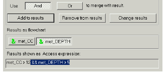

Creating a Complex Query
The Filter List dialog box is enhanced to include metrics and attributes for filtering, formatting, and sorting. Through the Results shown as Access Expression field in the Filter List dialog box, you can create a multi-layer Access (command line) query and apply it to a column.

When you set an Access query, you create a static, or constant, filter on the contents of that column. Because Access supports metrics, you can use this field to apply a metrics filter.
See the DIScover Access Guide for information on the commands, attributes, and operators available through Access.
Using this field alone (without using the drop-down attributes and operators) requires some knowledge of Access.
Note: In the Filter List, you do not need to use the Access command “apply” to query multiple entities for a matching attribute.
The Results as flowchart field takes multiple queries using boolean operators, and you can use any attribute or valid Access attribute expression. This allows you to create complex metric queries and apply them to any result set.
Example
met_CC > 12 && met_DEPTH > 5
For more information on writing Access expressions, see the DIScover Access Enterprise Edition Guide.
This is an example of an Access expression; specifically, it is a string that searches for entities in the information model with a Cyclomatic Complexity metric greater than 12 and a Nested Control Structure depth metric greater than 5.
Related Topics